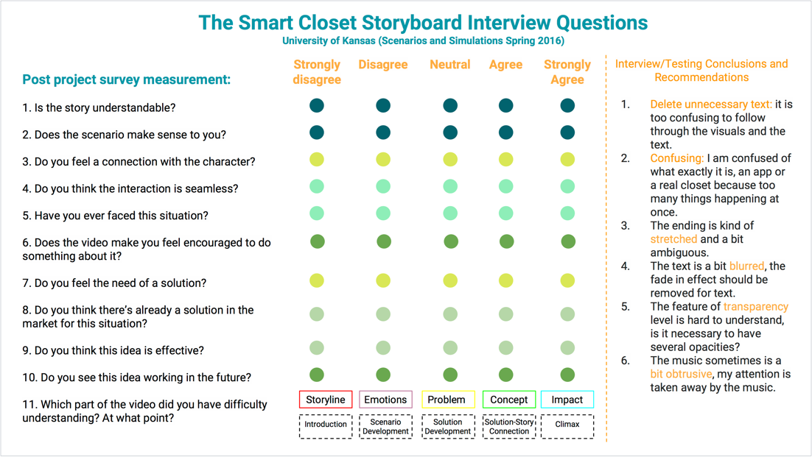
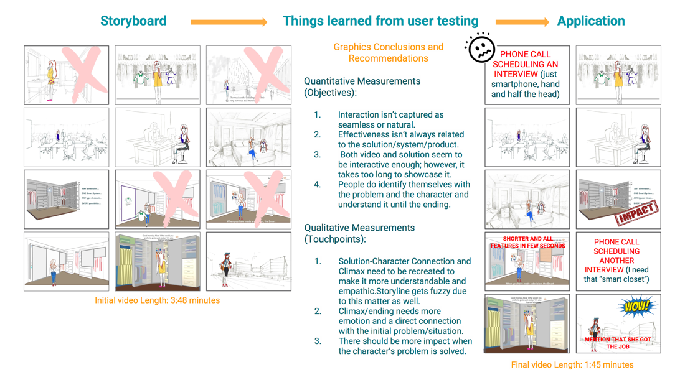

Process
3-What methods instructed us to analyze the problem
We used 3-What methods to help us analyze the current dressing problem, which was What has
happened, What could happen, and What should happen?
-
What has happened?
Users needed to think about what to wear every morning, like checking
the weather to make a decision. And they needed to know what cloths they had, where cloths were stored,
and dressing tips. They got answers from their memory, knowledge and manually finding, and reaching our
for help.
-
What could happen?
Due to forgetting schedule and lacking of time, users may wear
inappropriate clothes on certain occasions. Also, they may don’t know what should to wear at all. Even
worse, if users realized that they needed help to get answers, sometimes they couldn’t find help from
others, which was super distressing.
-

What should happen?
We supposed that users could spend no time thinking of what to wear
under the help of dressing suggestion and items locating. The system should have easily-understood interfaces, which also could interact with storage
infrastructure. Therefore, the idea of a seamless interaction with a dressing-storage system came out.
Our objective is to provide a new way to dress and store clothing items to make users
interact with daily dressing activities naturally and seamlessly.
Then we sketched a storyboard and used powerpoint to make a video as the first draft. We designed our
storyboard in 5 main parts: introduction, scenario development, solution development, solution-character
connection and climax. Then we could ask audiences to rank each part so that would be easier for us to
find what we need to improve.
We set five goals to our story:
- Seamless: smooth and continues, with no apparent gaps or spaces between one part and the next
- Interactive: influencing or having an effect on each other
- Empathy: the ability to understand and share the feelings of another
- Effective: successful in producing a desired or intended result
- Understandable: capable of being apprehended or understood
Then we invited 10 audiences to watch our video. After that, they needed to fill a questions form so that
we could get feedback to improve our storyboard.

Based on the feedbacks, for quantitative measurements, we analyzed that the understandability and empathy
of our story were inferior to other goals. Besides, for qualitative measurements, we spotted 4 low video
touch points.
Then we did the according modifications to make the storyboard more concise but more
memorable. You could see the details of the modification from the below figure.
